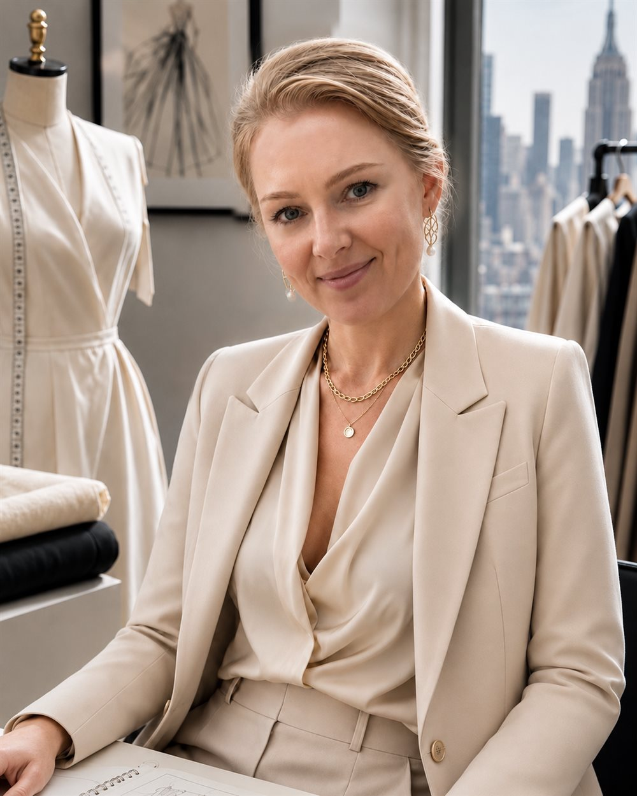

New York-based Head Draper and garment construction specialist.

Turning a designer's vision into a beautifully constructed garment.
Evgenia Barashkova is a New York-based Head Draper and garment construction specialist with extensive experience in high-level dress and costume construction. Her work focuses on transforming an idea or a sketch into a finished garment with precision, structure and attention to every detail.
She works the way a couture atelier works: drafting and draping to the individual, building considered interiors, and finishing by hand so a dress holds its line and wears beautifully over time.
Book a ConsultationEvgenia trained formally in garment construction and pattern-making, and holds a specialist diploma in textile engineering — evaluated in the United States as the equivalent of a Bachelor of Science and Master of Science in the field. Her early years were spent as a seamstress, tailor and cutter, learning the craft from the inside out.
For nearly two decades she has worked as an independent maker and construction specialist, building a private practice around made-to-measure and bespoke garments before continuing her work in New York.
Her method draws on the classical German cutting system of M. Müller & Sohn, Italian tailoring, and the architectural pattern-making of the Japanese Pattern Magic school. This grounding in structure — how a garment is built, not only how it looks — is what allows a dress to fit cleanly, move well and last.
Alongside private dressmaking, Evgenia has experience in complex costume and garment construction for New York's theatrical and entertainment industry — work that demands precision, speed and the ability to realise an ambitious design faithfully. That rigor is carried into every private, made-to-measure piece she makes.
In 2025 Evgenia was invited by Theatre Design & Technology — the official journal of the U.S. Institute for Theatre Technology (USITT) — to serve as an expert reviewer of a scholarly book on the craft: the Routledge monograph Costumers at Work by Madeline Taylor. An invitation of this kind, extended to a practitioner asked to draw on her own professional expertise, reflects the standing of her technical knowledge within the field.
Begin with a private consultation to discuss your dress, your occasion and your timeline.
Schedule a Private Consultation